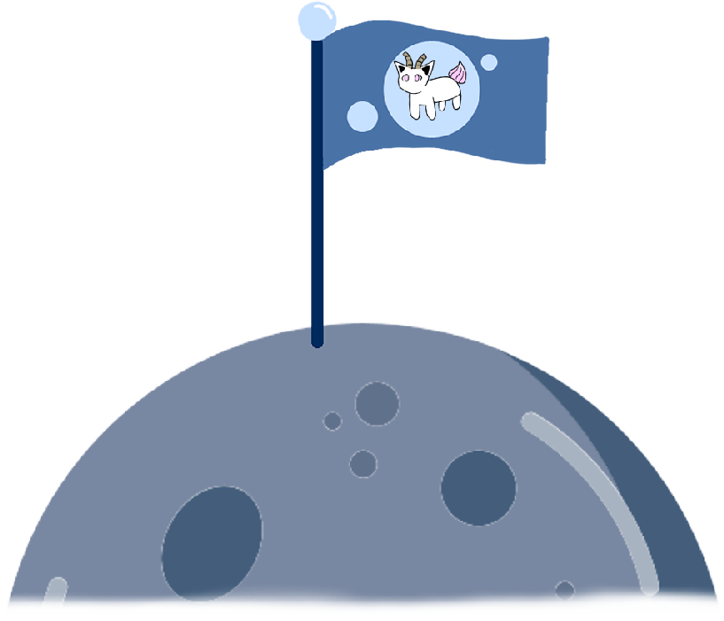

CONTEXTE

Afin de tester mon savoir des jeux 2D sur un vrai projet, j’ai créé entièrement un jeu de plateforme sur Unity. Je devais au moins réaliser une animation de repos (idle), une en courant et une en sautant. Le gameplay de jeu plateformes devait s’accompagner d’obstacles immobiles, d’autres à pousser pour avancer, d’objets dangereux tombant aléatoirement du ciel, d’objets à ramasser (pièces et power-ups), d’une interface utilisateur pour quitter et relancer le jeu en cas de victoire ou de défaite, d’une autre pour afficher les pièces, la vie et les différents objets ramassés, et d’ennemis nous pourchassant. L’équilibrage a été géré à travers une interface dans le menu pause pour modifier différents paramètres.
ÉTAPES

- Réflexions sur le style du jeu, son gameplay en profondeur, et ses environnements
- Recherche et réalisation des ressources graphiques
- Développement des managers et controllers du jeu
- Implémentation du premier niveau
- Implémentation du menu principal et du menu pause
- Implémentation du second niveau et ses différentes mécaniques
- Composition des musiques du jeu (menu, niveau 1 et niveau 2)
- Implémentation du menu pour modifier les paramètres d’équilibrage
PRINCIPE DU JEU
-

Grosse Pièce gardée par un capybara
-

Obtention d'un power-up
-

Différents ennemis du jeu
Bokena (nom inspiré de « bōken » signifiant « aventure » en japonais) est un jeu au style
pixel coloré où le but de chacun de ses 2 niveaux sera d’atteindre la gemme colorée en
collectant le maximum de pièces. Des power-ups de Dash (bond en avant) et de double-
saut ont été implémentés, en plus de collectibles rares (Grosse Pièce) à trouver à chaque
niveau. Deux types d’ennemis sont présents :
- les slimes qui peuvent sauter pour vous poursuivre, mais vaincus en un saut sur leurs
têtes
- les monstres de cavernes, plus lents que les slimes et dénués de saut, mais plus
résistants et plus puissants.
Dans le niveau 1, vous commencez dans des plaines ensoleillées où les power-ups et les
pièces sont faciles à atteindre. Pénétrez ensuite dans la caverne dont l’entrée ressemble
à une mâchoire pour y trouver la gemme colorée (et d’autres surprises...).
Dans le niveau 2, après avoir continué dans la grotte du niveau, vous vous retrouvez
dans ses profondeurs glacées. Il existe 3 passages secrets vous permettant d’obtenir les
power-ups de ce niveau. Vous trouverez encore plus de chemins différents pour atteindre
l’arrivée dans ce niveau. C’est dans ces profondeurs glaciales que les monstres des
cavernes apparaissent et que des stalactites peuvent vous tomber dessus. Prenez garde !
BOKENA, UN PLATFORMER COLORÉ
QUE J'AI ADORÉ DÉVELOPPER

Bokena a été comme mon premier vrai jeu vidéo à moi. Des années
auparavant, je faisais de petits jeux sur Scratch, mais je savais que
ce n’était pas grand-chose par rapport à ce que l’on peut faire avec
des moteurs plus performants. Grâce à Bokena, j’ai su ce dont j’étais
capable en 2mois de développement. Travailler les sfx, les musiques,
l’interface utilisateur, le level design, le game design et mes
compétences en programmation sur Unity a été un réel bonheur pour
moi. Je n’ai rencontré que des difficultés minimes. Par exemple, je
n’ai pas réussi à créer un recul qui me convenait lorsque le
personnage se prenait des dégâts. J’ai su trouver un compromis avec
les physiques de Unity pour surmonter ce problème.
Après ce projet, je me suis rendu compte que j’avais plusieurs points
d’amélioration sur mon code. Bien sûr c’est en codant qu’on en
apprend de plus en plus sur les pratiques d’un bon code, et c’est
exactement ce que le projet a fait. Je me suis également familiarisé
de plus en plus avec Unity.
En bref, je suis très heureux d’avoir fait ce projet, d’avoir fait Bokena.